实验 2: 配置认知 ROS
ROS Configuration and Basic Concepts
实验手册2——配置认知ROS
实验目标
掌握在Linux虚拟机中配置安装ROS1的方法。
理解ROS系统的特点，学会ROS基本命令。
通过驱动小海龟节点理解话题机制，使用可视化工具查看节点间关系。
实验准备
实验1已经安装配置好的Ubuntu20.04虚拟机。
保证虚拟机已连接可以访问网络。
实验步骤
实验一：在Ubuntu上配置ROS1运行环境
首先推荐一个ROS学习网站，各种ROS1/2的教程，该网站上都做了详细分享，可供同学们自主探索ROS的学习乐趣：鱼香ROS机器人https://fishros.com
在这里将会一个开源的脚本一键安装配置ROS环境，利用该脚本配置ROS系统将会极为方便，适合初学者快速上手ROS。同时也向同学们推荐一些网络教学视频，学有余力的同学可以对照视频进行ROS学习的巩固和拓展：
https://www.bilibili.com/video/BV1zt411G7Vn/?share_source=copy_web&vd_source=55dbc55501d5dcce34712b0bbd70daa4打开虚拟机，进入主界面后呼出终端（鼠标点击一下桌面后，同时按住ctrl+alt+T键，参考第一节课的实验手册。）
在终端中输入如下命令(可以右键选中如下命令点击复制，再粘贴到终端中)：
wget http://fishros.com/install -O fishros && . fishros
如要求输入密码赋予操作权限，则输入设定好的用户密码，注意输入的密码不显式显现，输入完毕直接按回车键。
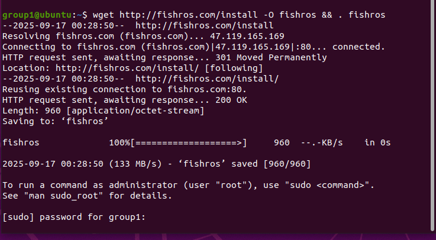
到这一步我们输入数字1后按回车键
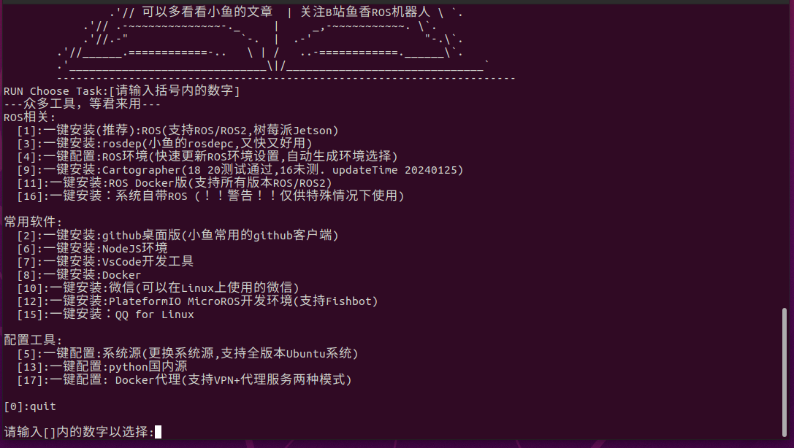
接下来选择更换系统源再继续安装，因为原生的Ubuntu系统的软件安装来源来自于外网，我们直接访问速度会很慢，但是有国内的镜像网站，我们访问国内的网站速度会更快，输入数字1再按回车键。
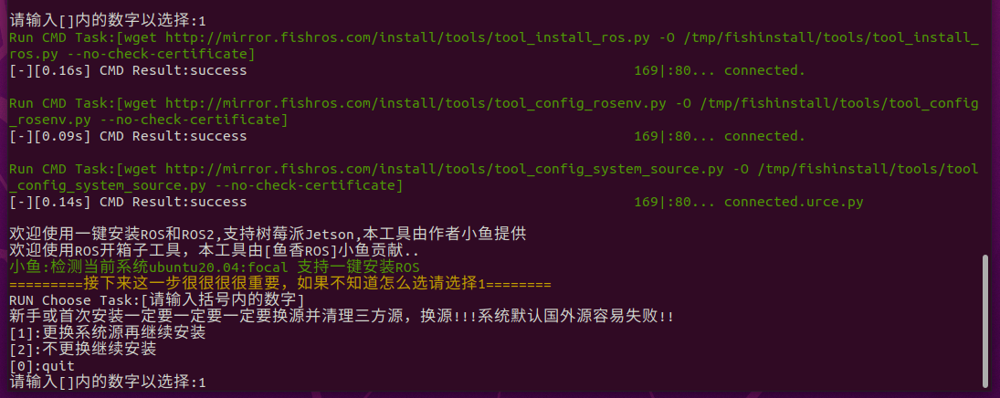
到这一步输入数字2再按回车键。
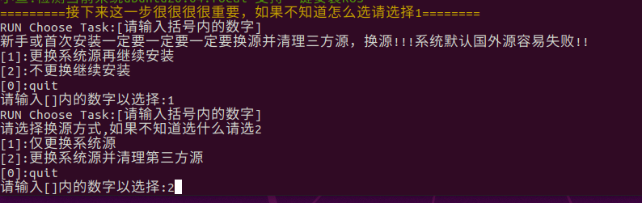
再下一步让脚本自动帮助我们选择下载速度最快的源，输入数字1按回车键。
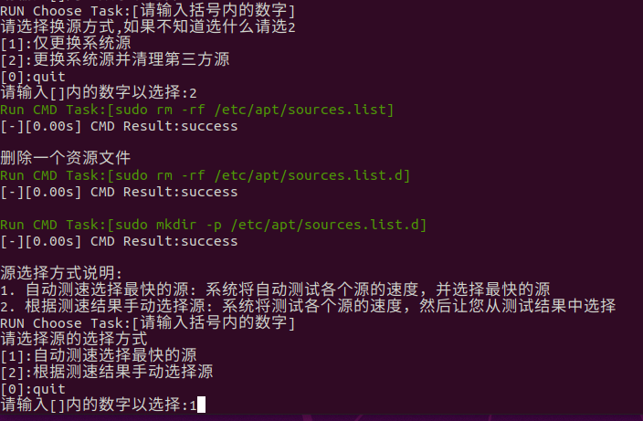
经过一定时间地等待，到达这一步，我们选择安装ROS1，输入数字3按回车键。
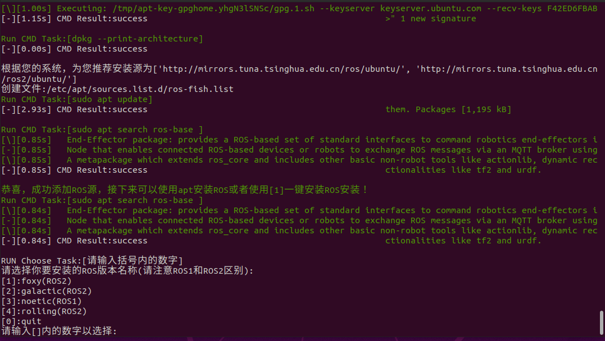
在这一步输入数字1按回车键选择桌面版。
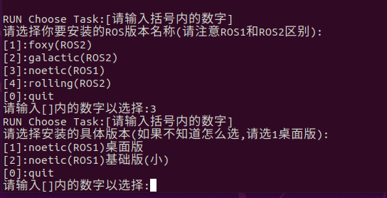
经过稍微较长的等待时间，ROS1系统就安装好了。
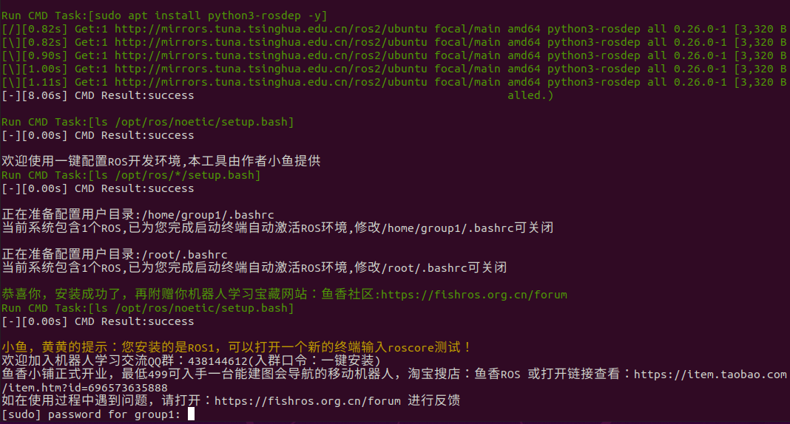
然后输入以下命令：
roscore
如果正常出现以下界面，则代表ROS系统环境安装配置成功在运行所有ROS程序前，都要先运行该命令。现在可以尽情探索ROS的魅力了。此时再给已经配置好ROS1环境的ubuntu系统拍摄一个虚拟机的快照，保存此时的系统状态（拍摄系统快照的方法见实验手册1）。
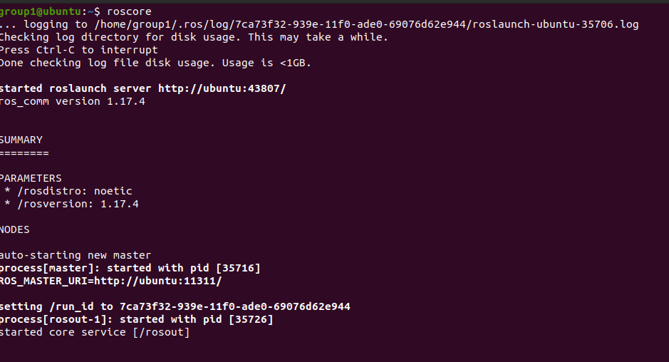
实验二：运行ROS的小海龟组件
对于ROS1来说自带一个类似于“Hello world！”的程序，就是海龟模拟器组件，可以通过键盘操控一只海龟进行移动，理解该组件的运行原理可以极大地帮助入门学习ROS系统。
对于原来打开的运行了roscore的终端不要关闭，重新呼出一个终端，输入如下命令：
rosrun turtlesim turtlesim_node
该命令启动了海龟仿真器节点。其中rosrun命令后面跟的两个命令，turtlesim代表的是一个功能包，可以理解为该功能包为一个集合，集合了运行模拟海龟组件的所有内容，turtlesim_node则代表了该功能包中的一个节点。运行完该命令后出现了一个模拟海龟的窗口。
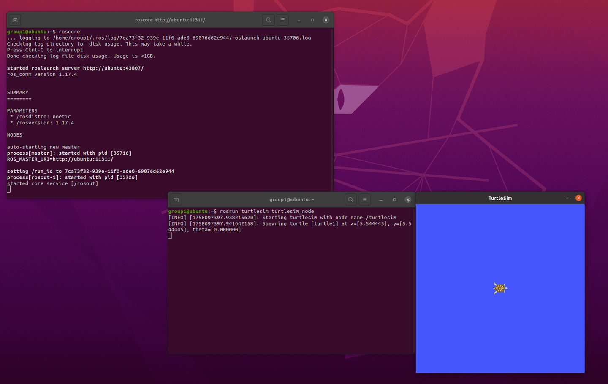
再重新新建一个终端，输入rosrun turtlesim 后(注意命令最后有个空格)，双击tab键可以查看当前包下的节点。
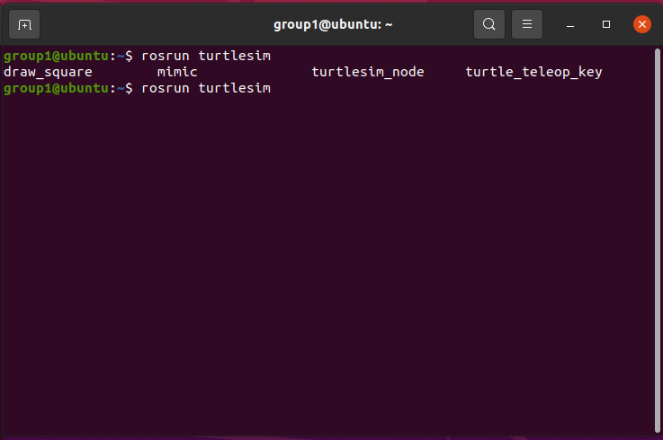
Linux小技巧，对应的终端命令输入一半（已输入的字符可以定位到这一类或一个命令时），按tab键可以自动补全命令，免去输入错误的麻烦。
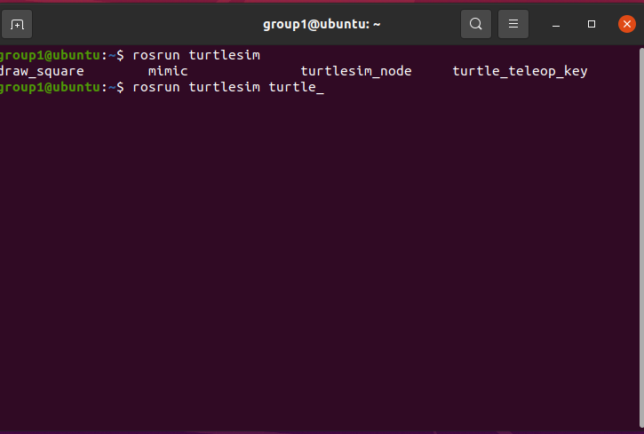
运行turtle_teleop_key节点，鼠标点击该终端，即可使用方向键操控小海龟。
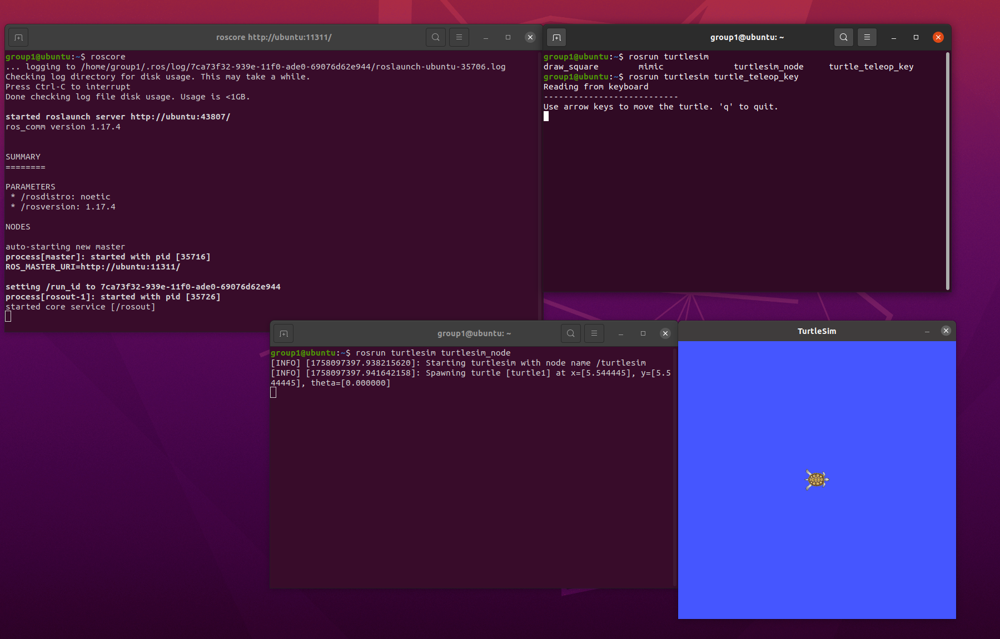
实验三：使用可视化方法查看小海龟组件运行原理
再新建一个终端，输入rqt_graph命令，出现一个可视化界面展示了当前运行的节点以及之间的通讯情况。可以看到/teleop_turtle（远程操控海龟节点）发布了/turtle1/cmd_vel话题，该话题的内容为即为海龟的速度转向的参数，由/turtlesim（海龟模拟节点）订阅该话题。若想停止某个终端正在执行的命令，在该终端按下ctrl加上c键即可终止。
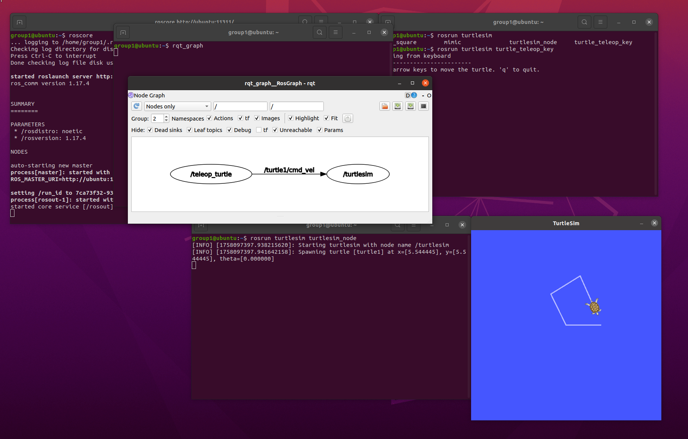
同样地，rqt命令还有很多用法，输入rqt_之后再双击tab键可以看到rqt的其他可视化工具，我们再尝试一下rqt_plot命令，
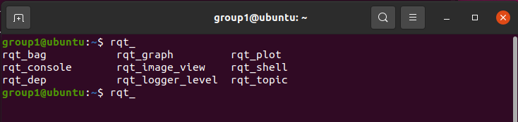
在所要监控的topic中选择海龟的位置信息，此时再键盘操控海龟，即可看到海龟的坐标信息的变化能被图表监控到。
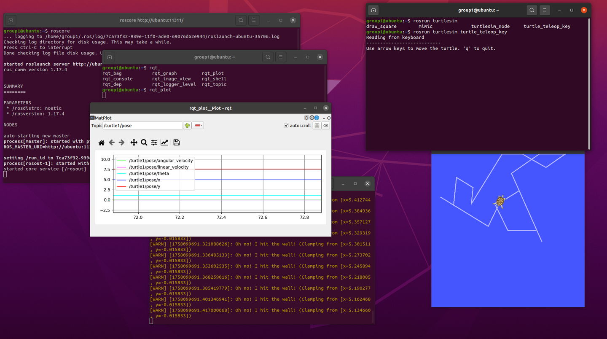
实验四（拓展）：ROS基本的rosnode和rostopic命令的使用
直接在新的终端输入rosnode命令，显示了其用法，例如输入rosnode list命令即可展示当前正在运行的节点，输入rosnode info加上空格加上节点的名字即可查看该节点的详细信息。
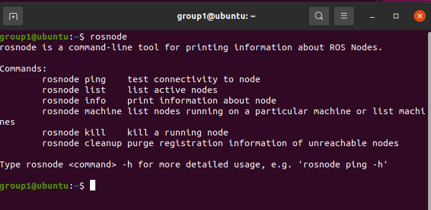
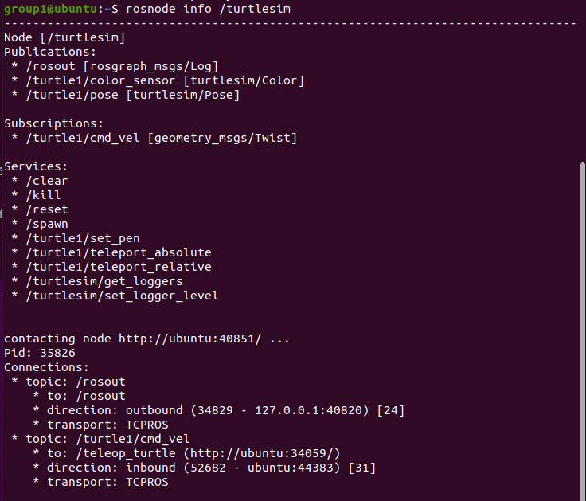
同样地，对于rostopic命令也可查看当前话题的信息。
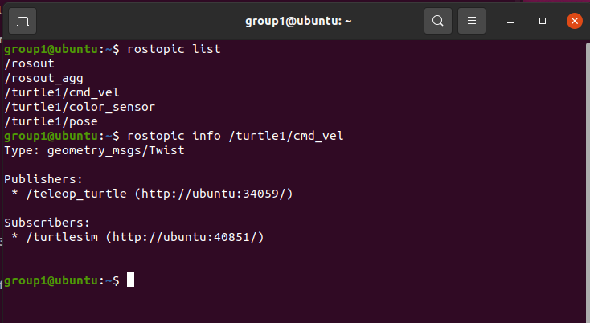
注意，我们之前驱动海龟是由teleop_turtle节点读取键盘输入，在/turtle1/cmd_vel话题发布信息驱动海龟，我们同样可以通过命令行的方式让海龟自动行动。
按照如下方式输入命令，在此时双击tab键 。
可以看到控制海龟的/turtle1/cmd_vel话题由线速度和角速度的参数组成，按左右的方向键直接修改第一行linear后的x的值为1.0，再回车可以看到海龟行进了一小段距离就停止了，因为该话题止发布了一次。
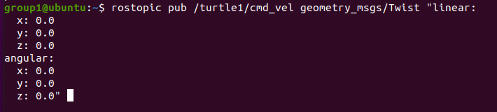
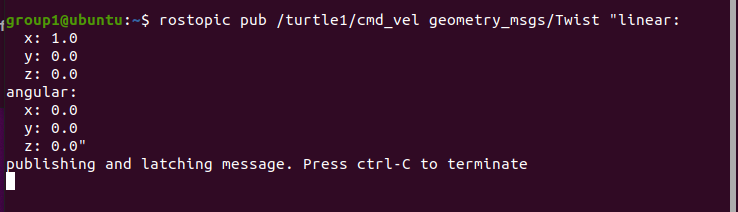
现在按照如下方式输入命令，加入-r 10的参数，意思是设置该话题循环每秒发布1次，这样海龟就会一直前进直到撞墙。
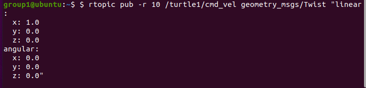
现在，利用以上学到的操作，让海龟不停绕圈移动，利用可视化工具观察其位置坐标变化。
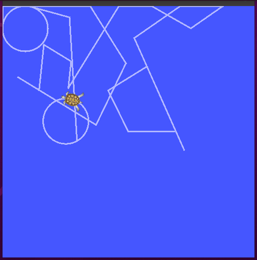
链接资料整理
本节将手册中出现的外部链接整理为离线可读要点。为避免材料过长，网页内容以课堂用途和关键提示形式归纳，原始 URL 保留供课后查阅。
1. 鱼香 ROS 工具与学习入口（网页标题：鱼香ROS - 合肥幻刃科技有限公司）
原始链接：https://fishros.com
课堂用途：作为 ROS 安装、配置和入门学习的补充入口。
• 该入口聚合 ROS 安装脚本、教程和常见问题资料。
• 课堂中主要使用一键安装脚本完成 ROS1 环境配置，安装后以 roscore、turtlesim、rqt_graph 验证。
• 若安装源访问较慢，可结合国内镜像源和课堂提供的网络环境排查。
2. ROS 入门视频课程
原始链接：https://www.bilibili.com/video/BV1zt411G7Vn/
课堂用途：课后理解 ROS 节点、话题、服务和工具链的补充视频。
• 适合在完成本手册操作后观看，用来补足 ROS 基本概念。
• 重点对应本手册中的 roscore、turtlesim、teleop、rostopic、rosnode 和 rqt_graph。
• 视频内容较长，建议按问题检索观看，而不是课堂中完整播放。
3. 鱼香 ROS 一键安装脚本入口
原始链接：http://fishros.com/install
课堂用途：用于通过命令行下载并运行 ROS 安装脚本。
• 手册中的命令为：wget http://fishros.com/install -O fishros && . fishros
• 运行脚本前需确认虚拟机联网正常，执行过程中按课堂要求选择 ROS1 和桌面版。
• 脚本会改动系统软件源和安装包，请在安装成功后为虚拟机创建快照。